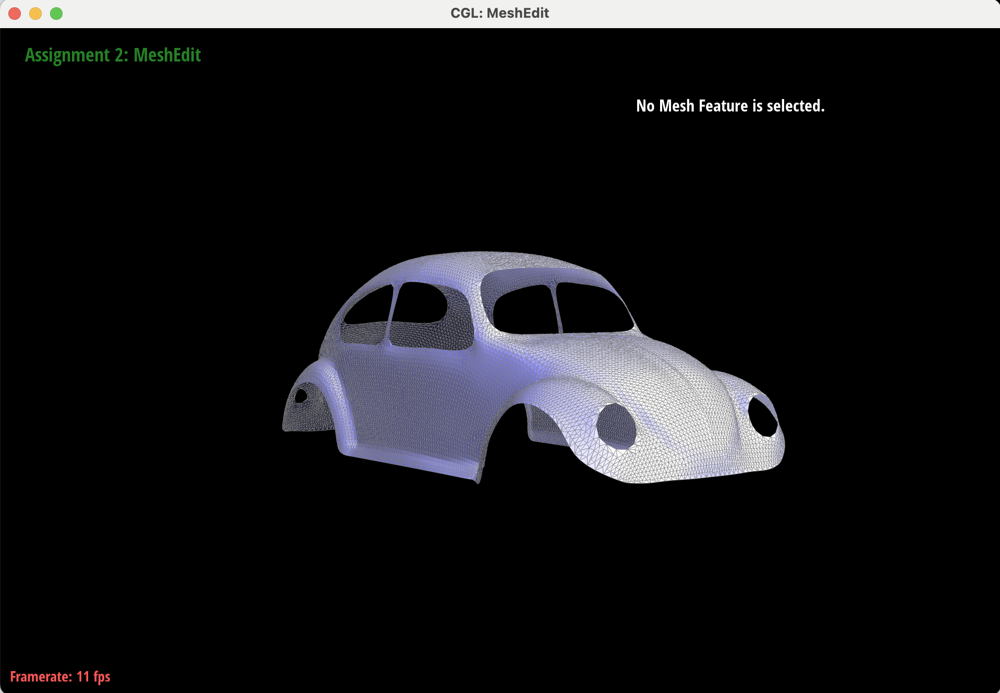
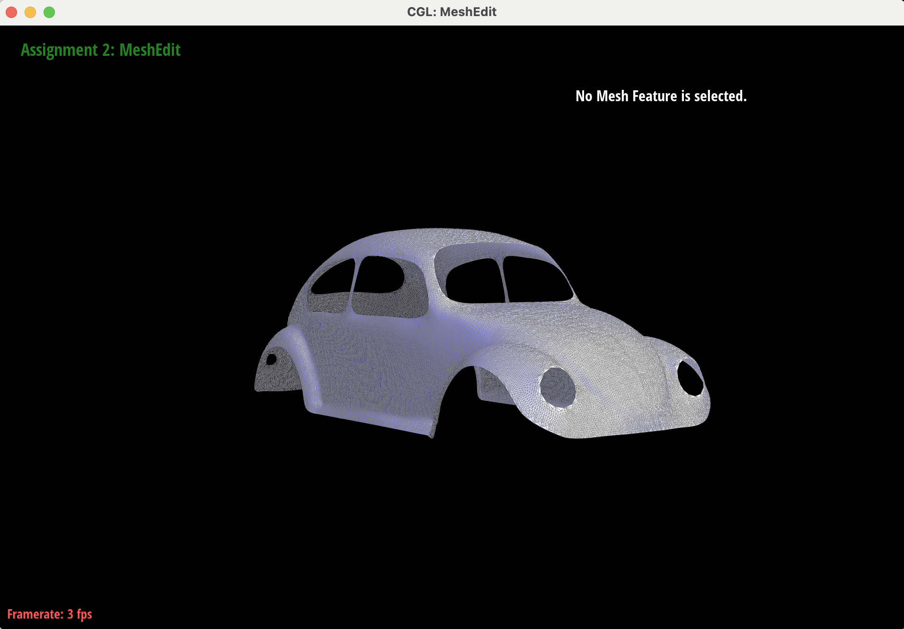
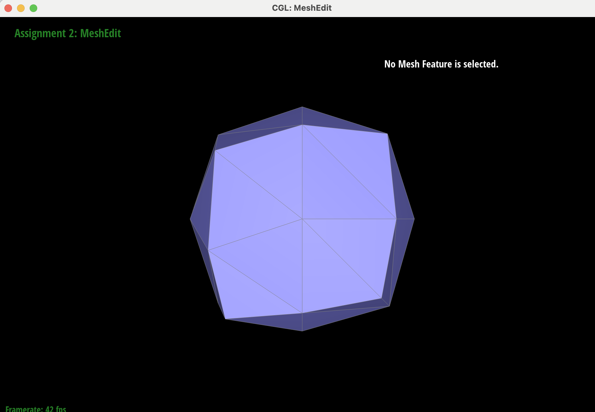
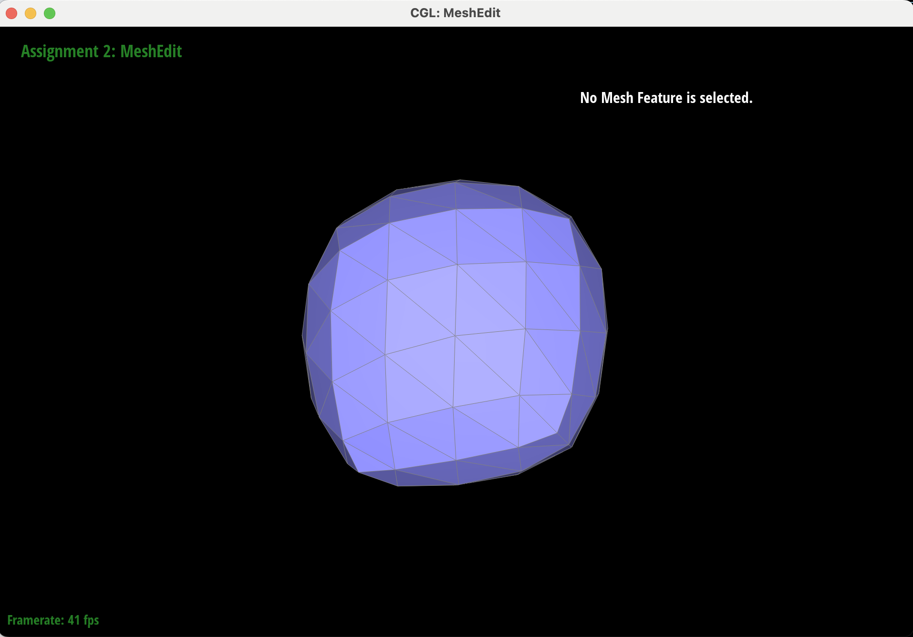
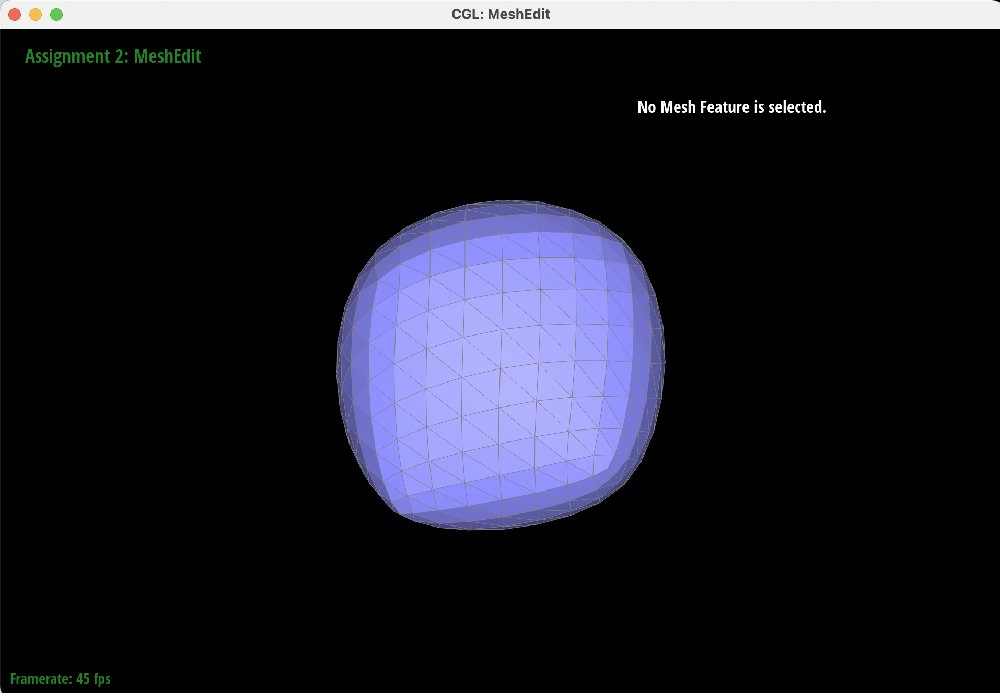
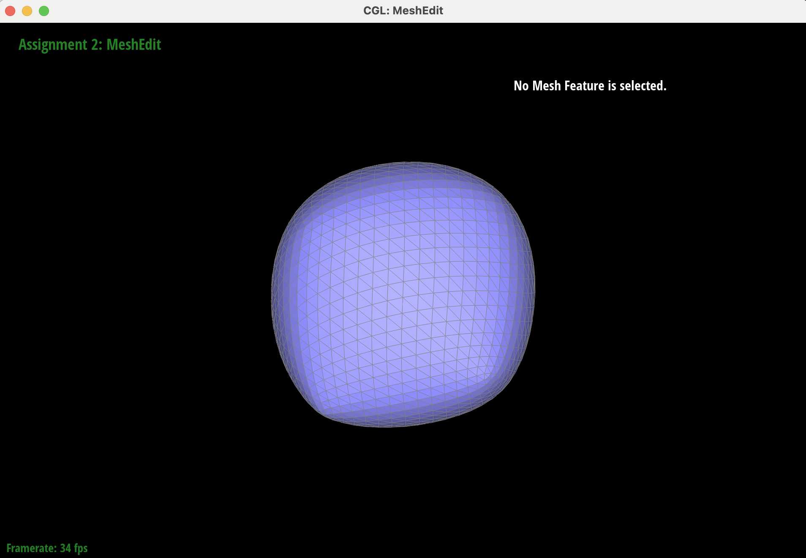
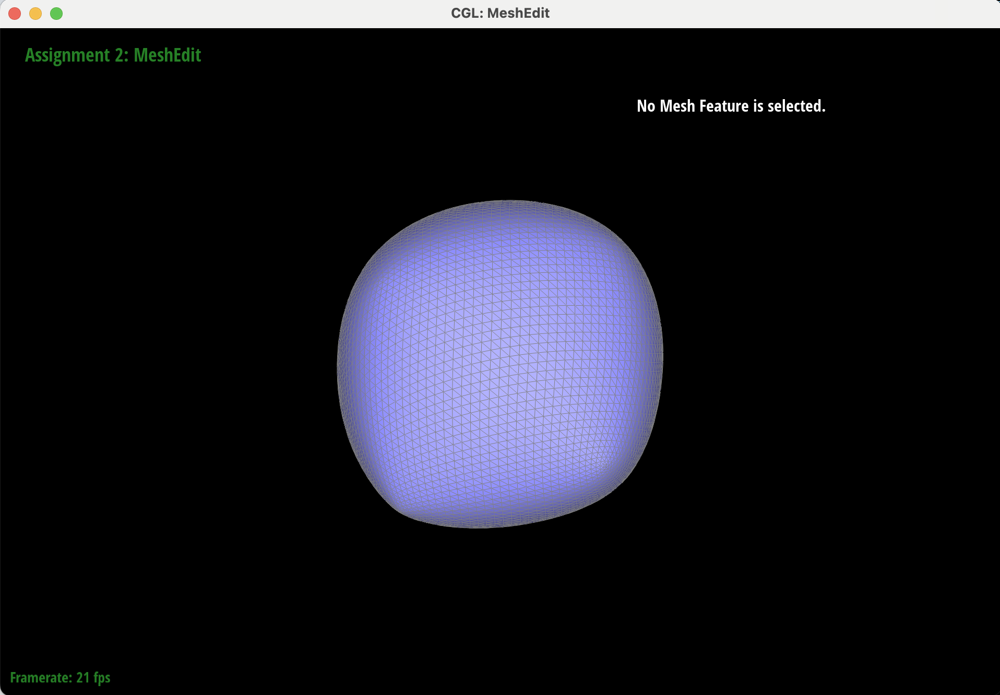

CS184/284A Spring 2025 Homework 2 Write-Up
Link to webpage: https://cal-cs184-student.github.io/hw-webpages-webpage/
Link to GitHub repository: https://github.com/cal-cs184-student/sp25-hw2-slay.git
Overview
In this homework, I implemented de Castelijau's algorithm to evaluate Bezier curves, extended de Castelijau's algorithm to Bezier surfaces, implemented area-weighted vertex normals, implemented edge flips and edge splits, and implemented loop subdivision to upsample meshes. This assignment has helped me to better understand the halfedge data structure and how triangle meshes can be transformed. Furthermore, with regards to upsampling, I now know how pre-processing steps can impact structure, having played with splitting and flipping edges.
Section I: Bezier Curves and Surfaces
Part 1: Bezier curves with 1D de Casteljau subdivision
In this task, I implemented the De Casteljau algorithm to evaluate Bezier curves.
Bezier curves are used to define curves with tangents.
In the De Casteljau algorithm, you linearly interpolate between ordered points,
linearly interpolate between those linear interpolations, and so on, to
determine evaluated points that will define the Bezier curve.
Given \( p_0, \dots, p_n \) control points, and a parameter \( t \),
we can compute \(n-1\) control points where each point in the subdivision
is a linear interpolation of two adjacent control points
\( (p_i, p_{i+1}) \). The next subdivision level \( p'_0, \dots, p'_n \)
is calculated as follows:
\[ p_i' = (1 - t) * p_i + t * p_{i+1} \]
At each call to evaluateStep(), I iterate through the given vector of Vector2D elements
in order to create a new vector of the linear interpolations. The function returns this vector, effectively
performing one step or subdivision of the de Casteljau algorithm.
bzc/curve3.bzc at each level of the evaluation from the original control points

|

|

|

|

|

|

|
bzc/curve3.bzc after clicking and dragging control points
|
|

|
bzc/curve3.bzc with varying values of \( t \)

|
|

|

|
Part 2: Bezier surfaces with separable 1D de Casteljau
De Casteljau's algorithm can extend from Bezier curves to surfaces
by evaluating Bezier curves along one direction (direction of \(u\))
and then evaluating the "moving" Bezier curve
(using the control points of direction of \(u\) curves, in the direction of \(v\)),
thereby evaluating the surface position corresponding to \((u, v)\).
In my implementation, control points are stored in a 2D vector of Vector3D points.
The evaluate() function iterates through the rows of controlPoints
and calls on evaluate1D() to determine the final interpolated vector, parameterized with \(u\),
for that row. As a note, evaluate1D() makes several calls to the Vector3D version of evaluateStep(): a
function that performs one step of the de Casteljau algorithm. I store all of the final interpolated vectors of the controlPoints
rows in a new vector, which represents the moving Bezier curve.
Finally, I determine the final interpolated vector corresponding to the moving Bezier curve by calling evaluate1D(), this time
parameterized with \(v\).

|
Section II: Triangle Meshes and Half-Edge Data Structure
Part 3: Area-weighted vertex normals
To find the area-weighted vertex normal of a point, normal()
iterates through the faces incident to the vertex. To go from one incident triangle to
the next, the \(\text{new halfedge} = \text{current halfedge} \to \text{twin} \to \text{next}\).
At each of the faces, the normal vector is calculated by crossing two of the edge vectors of the triangle;
this value is inherently area-weighted. The area-weighted vectors of the incident
faces are summed and normalized to determine the area-weighted vertex normal.
dae/teapot.dae shading

|

|
Part 4: Edge flip
To implement flipEdge(), after checking that the edge we intend to flip (\(e0\)) is not on the boundary,
I find and name all of halfedges in the
two triangles. In my implementation, I envisioned the triangles shown in the image below and to the left
(triangle \(ABC\) and triangle \(BDC\)), aiming to flip the edge between points \(C\) and \(B\), to
be an edge between points \(A\) and \(D\). I arbitrarily decided that the halfedge of
\(e0\) would go from point \(C\) to \(B\) (refered to as \(cb\)), and the twin of that half edge would
go from point \(B\) to \(C\) (refered to as \(bc\)) - essentially the provided edge and halfedge of said edge informed
how vertices were named/assigned. From there, I could determine all of the halfedges of the
two triangles by calling next().
Additionally, I was able to retrieve the vertices of \(A\), \(B\), \(C\), and \(D\),
by calling vertex() with the appropriate halfedges.
I used all of the halfedge, face, and vertex components of the \(ABC\) and \(BDC\) triangles to
reassign the appropriate values to make the \(cb\) halfedge go from \(A\) to \(D\), and
the \(bc\) half edge from \(D\) to \(A\), creating new triangles \(ADC\) and \(ABD\). I
reassigned halfedge->next() values, ensured the face of each triangle had the correct halfedge,
and assigned \(cb\) to be the twin of \(bc\) and vice versa, all illustrated below and to the right.
After all of this rearranging, I return the flipped edge iterator.
I did not experience a debugging journey.

|
dae/cube.dae before and after edge flip

|

|
dae/teapot.dae before and after edge flips

|

|
dae/cow.dae before and after edge flips

|

|
Part 5: Edge split
To implement edge splitting, I used the same naming convention in splitEdge() as I had done in
flipEdge(), as pictured below and to the left.
I started by confirming that neither neighboring face of the edge was on a boundary loop, returning immediately otherwise.
From there, I created 1 new vertex (\(M\)) at the
midpoint of the edge between \(C\) and \(B\), 3 new edges (\(e1\), \(e2\), and \(e3\)),
6 new halfedges (\(ma\), \(mb\), \(mc\), \(md\), \(am\), and \(dm\)), and 2 new faces (face \(AMC\) and face \(BDM\)),
all shown below and to the right.
The existing halfedges \(cb\) and \(bc\) were modified so that they go from
vertex \(C\) to vertex \(M\) and vertex \(B\) to vertex \(M\), respectively.
Halfedges were then assigned the appropriate edge, vertex, and twin, and each edge was assigned an appropriate halfedge.
Next, I reassigned halfedge->next() values to create the newly formed
triangles \(ABM\), \(AMC\), \(BDM\), and \(CMD\).
Each halfedge was assigned the appropriate face, and each face was assigned an appropriate halfedge.
Finally, vertex \(M\) was assigned the halfedge of \(mb\).
I then returned vertexIter \(M\), the halfedge of which points along the edge that was split.
I did not experience a debugging journey.

|
dae/cube.dae before and after edge split
|
|

|
dae/teapot.dae before and after edge splits and flips

|

|

|
Part 6: Loop subdivision for mesh upsampling
I implemented upsample() using the suggested implementation method:
- Compute new positions for all the vertices in the input mesh using the
Loop subdivision rule.
- I iterate through the vertices of the mesh. For each vertice, I
found the degree and the positions of all neighboring vertices
to apply the update rule: \[
v'_{\text{old}} = (1 - n*u) v_{\text{old}} + \sum_{v_j \in N(v_{\text{old}})} u*v_j
\]
where \(n\) = vertex degree,
and \(u\) = 3/16 if n = 3, 3/(8n) otherwise
Each new position is stored in the vertex'snewPositionfield and labeled as not new.
- I iterate through the vertices of the mesh. For each vertice, I
found the degree and the positions of all neighboring vertices
to apply the update rule: \[
v'_{\text{old}} = (1 - n*u) v_{\text{old}} + \sum_{v_j \in N(v_{\text{old}})} u*v_j
\]
where \(n\) = vertex degree,
- Compute the updated vertex positions associated with edges.
- I iterate through the edges of the mesh. For each edge, I determine the
vertices atop and below, as well as
the vertices making up the two triangles adjacent to / made up by the edge.
The new position of the edge is then calculated as follows:
\[
v'_{\text{new}} = \frac{3}{8} (v_{\text{left}} + v_{\text{right}}) + \frac{1}{8} (v_{\text{up}} + v_{\text{down}})
\]
Each new position is stored in the edge's
newPositionfield and labeled as not new.
- I iterate through the edges of the mesh. For each edge, I determine the
vertices atop and below, as well as
the vertices making up the two triangles adjacent to / made up by the edge.
The new position of the edge is then calculated as follows:
\[
v'_{\text{new}} = \frac{3}{8} (v_{\text{left}} + v_{\text{right}}) + \frac{1}{8} (v_{\text{up}} + v_{\text{down}})
\]
Each new position is stored in the edge's
- Split every edge in the mesh in any order.
- I iterate through the original edges (by making a vertex containing all of the edges before editing the mesh further)
and split all edges. As a note, I made it such that
splitEdge()labels the appropriate edges as new or old (referencing the diagram above, for task 5, \(e0\) and \(e2\) are considered old, and \(e1\) and \(e3\) are considered new). The new vertices returned bysplitEdge()(which are midpoints to the edge that was split) are assigned thenewPositionof their associated edge'snewPosition, and the vertex is marked as new.
- I iterate through the original edges (by making a vertex containing all of the edges before editing the mesh further)
and split all edges. As a note, I made it such that
-
Flip any new edge that connects an old and new vertex.
- I iterate over all of the edges in the mesh. If the edge is new,
I determine the vertices of that edge, and if one of the vertices is new and one is old,
I flip that edge with
flipEdge().
- I iterate over all of the edges in the mesh. If the edge is new,
I determine the vertices of that edge, and if one of the vertices is new and one is old,
I flip that edge with
- Copy the new vertex positions.
- I iterate over all of the vertices in the mesh and assign the
positionto be the position held innewPosition.
- I iterate over all of the vertices in the mesh and assign the
Initially, I was calculating the old vertex positions incorrectly, such that the display was not rendering correctly because the points were so far out there. As a part of debugging, I commented out the edge position and vertex position assignments to the corresponding newPositions, which helped me to better see the state of my solution at the time (make other problems in my code visible).
As shown in the below beetle screenshots, loop subdivision
steps increase the number of triangles in the mesh, smoothing out
the shape of the object. This means that the corners become much
rounder, and the edges become smoother.
Looking at the beetle, the ridges of the car windows or car wheels
become far less ridged, and the hood of the car rounds out.
Pre-splitting some edges would create additional vertices and edges prior to
loop subdivision. The additional edges would help retain some of the original shape
and sharpness during the interpolation steps of loop subdivision, counteracting
the rounding of corners.
dae/beetle.dae after loop subdivision

|

|

|
After repeated subdivisions, the cube becomes asymmetric, as shown below. The cube almost starts to approach a sphere.
dae/cube.dae after loop subdivision
|
|

|

|
|

|

|

|
I added some flips and splits to try and make the cube subdivides more symmetrical. The images below show the impact pre-splitting and pre-flipping can have on the loop subdivision. Edge splitting can help create a more uniform distribution of vertices and potentially maintain the definition of corners by creating more vertices/edges at a strategic location, andedge flipping can rebalance the edges.
dae/cube.dae after minimal pre-splitting and loop subdivision
|
|

|

|
dae/cube.dae after additional pre-splitting and pre-flipping and loop subdivision
|
|

|

|
Comparing the two pre-processing examples above and the cube subdivision without pre-processing, the cubes with pre-processing split more symmetrically. Furthermore, the cube with more splits and flips resembles a cube after a subdivision more so than the other pre-processed cube.